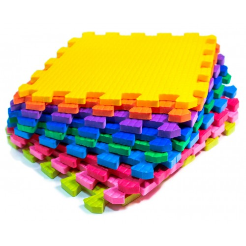

Покрытие напольное

Цвет: розовый, синий, белый, коричневый, фиолетовый, василек, жёлтый, красный, салатовый, зеленый, оранжевый, голубой. Или комплекты разного цвета
Производство: Турция
Материал: EVA
Размеры: разные
Толщины: разные
Мягкий пол - мягкое модульное покрытие на основе EVA (этиленвинилацетат). Модули выполнены в виде квадратных плиток, соединяющимися между собой креплением «ласточкин хвост». Покрытие прекрасно подойдёт для игровых зон в торговых центрах, детских комната, спортивных залов. Так, например, детские сады и ясли являются основным заказчиком детских модульных ковриков, ведь напольное покрытие абсолютно безвредно и не собирает пыль. Покрытие так же используется в спортивных школах и клубах в качестве татами, как для тренировок, так и для проведения международных соревнований. Маты обладают хорошей амортизацией, позволяющей смягчать удары от падений.
Основные характеристики мягкого пола:
- гипоаллергенный
- быстро и легко укладывается на твёрдую и ровную поверхность пола и так же легко разбирается, что позволяет получить ровный пол без клея и с герметичными швами;
- имеет отличную теплоизоляцию, создаёт эффект “тёплого пола” (ребёнок в любое время года может ходить по такому полу босиком, сидеть или лежать на нём, не чувствуя холода);
- покрытие достаточно мягкое, чтобы смягчить падение ребёнка на пол;
- является также и шумоизолирующим покрытием;
- не собирает пыль, легко отмывается от красок, пластилина -покрытие стойко к бытовой химии и влаге;
- подходит не только для помещений, но и для улицы. На солнце цвета не выгорают, оставаясь такими же яркими; благодаря разным вариациям, можно собрать пол из модулей разных цветов, а также с вырубными фигурами.
Если вы ищите, где на выгодных условиях купить мягкий пол ЭВА оптом, то предлагаем ознакомиться с ассортиментом товаров нашего магазина. Компания Жанетт работает на рынке много лет. За время своего существования мы зарекомендовали себя в качестве надежного партнера, о чем свидетельствуют многочисленные положительные отзывы наших постоянных клиентов.
Почему стоит приобретать мягкий пол ЭВА?
Для тех людей, которые хотят сделать пол в любом помещении мягким, практичным, долговечным и стильным, лучше всего подходит материал ЭВА, потому как он отличается массой преимуществ.
К основным преимуществам этого материала можно отнести:
- упругость и эластичность;
- высокие эксплуатационные характеристики;
- широкую область применения;
- износостойкость.
Производство мягкого пола ЭВА
При производстве этого материала используются только современные методы и качественное сырье. Этот материал изготавливается из композитного полимера. Благодаря этому он является легким по весу и простым в уходе. В нем нет никаких вредных компонентов. Следовательно, мягкий пол ЭВА не вызывает аллергических реакций и раздражений на теле у пользователей.
Также к преимуществам этого материала стоит отнести его водонепроницаемость. Материал ЭВА довольно теплый. По нему приятно ходить как в тапочках, так и босиком. Поэтому его можно смело стелить в комнате ребенка. Он совершенно не скользкий даже при соприкосновении с водой.
Стоит упомянуть и о том, что особая технология производства позволяет сделать воздухопроницаемым, амортизирующим, эластичным и износостойким. Потребители отдают ему предпочтение именно благодаря всем выше перечисленным преимуществам.
Сфера применения мягкого пола пазлы
Мягкий пол пазлы можно встретить не только в общественных местах — таких, как спортзалы, фитнес-центры, детские учреждения, но и в быту. Такой пол отличается высокой устойчивостью к деформации. Он не трескается и не разрушается, поэтому прослужит своим владельцам много лет.
Что касается сферы применения мягкого пола пазлы из материалов ЭВА, то он широко используется при оформлении детских комнат. Такие полы не только украсят интерьер детской комнаты своим интересным дизайном и яркими расцветками, но и предотвратят травмы, уберегут детей от простуд и просто порадуют удобством в эксплуатации.
Те, кто уже отдали предпочтение этому напольному покрытию, успели убедиться в том, что оно является влагостойким, устойчивым к стиранию, упругим, теплым и внешне привлекательным.
Если вы хотите выгодно приобрести мягкий пол в нашем интернет-магазине оптом, то звоните по указанному номеру менеджерам и обсуждайте с ними все тонкости и нюансы заказа. Мы гарантируем своим покупателям не только оперативные сроки обработки заказов и самые лояльные цены, но и индивидуальный подход к каждому клиенту, бесплатные консультации специалистов и вежливость сотрудников. Поверьте, с нами всегда приятно и выгодно сотрудничать!